NYC Heat Risk Mitigation Planning - User Manual
Overview
The NYC Heat Risk Mitigation Planning web application is an interactive, browser-based spatial decision support tool designed for use by planners at the New York City Department of Transportation and other city agencies. The application allows users to visualize and overlay the spatial distribution of summer heat risk and existing heat mitigation features in New York City, and to analyze how those two phenomena relate to one another across the city's neighborhoods.
The application's primary intended use case is to help city planners determine where new public drinking fountains should be installed in order to best serve areas of NYC with heightened risk of death during heat events and a corresponding lack of existing heat mitigation features. Beyond this primary use case, the application is also well suited to siting and suitability analyses for other types of heat mitigation infrastructure, since it contains a broad set of contextual data layers describing both heat risk (the Heat Vulnerability Index developed by the NYC Department of Health and Mental Hygiene) and a range of existing heat mitigation features in the city (drinking fountains, cooling sites, spray showers, pools, beaches, indoor cooling centers, tree canopy, and the city's built form).
The application provides two complementary map views: a top-down 2D view for spatial analysis using the application's data layers, and an oblique 3D view for visualizing the city's built form and analyzing the shadows that buildings cast over the course of a summer day. Both views are powered by the ArcGIS Maps SDK for JavaScript and a combination of public ArcGIS REST feature services and locally hosted spatial data.
The application's interface is divided into two main areas: a sidebar along the left edge of the browser window, and the map view filling the remainder of the screen. The sidebar contains the application's title, a short summary of its purpose, a link to this user manual, the Toggle 2D / 3D button, and a series of expandable panels containing contextual information about the application's data layers and (when 3D mode is active) its shadow analysis tools. The map view contains the map itself along with a set of overlaid controls — for layer toggling, address search, navigation, basemap switching, and so on — each of which is documented in the sections that follow.
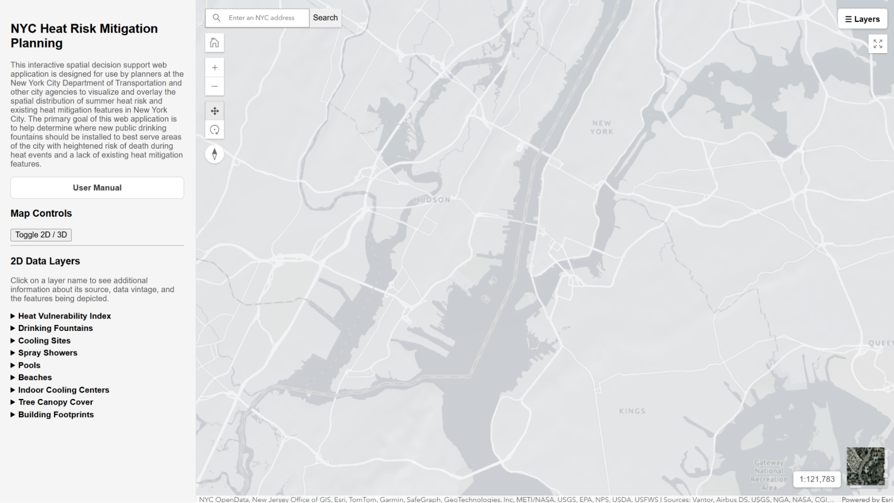
Accessing the Application
The application is hosted on GitHub Pages and is publicly accessible at:
https://omarc200.github.io/Heat_Mapping/
No login, account, or installation is required. The application loads directly in any modern desktop web browser. Google Chrome is the recommended browser for the best experience, particularly for the 3D view and its associated shadow analysis tools, which depend on WebGL hardware acceleration. Mozilla Firefox is also fully supported. Apple Safari may render the 3D view less reliably due to known WebGL limitations in that browser, and is not recommended for shadow analysis work.
The application is designed for desktop and laptop browsers. It has not been optimized for mobile phones or tablets, and some interface elements may not render correctly at small screen widths. An active internet connection is required at all times the application is in use, since all map tiles, vector data, and underlying SDK code are streamed from remote servers rather than bundled into the application itself.
When the application is first loaded, the map renders at a default citywide view of New York City. All data layers are turned off by default and must be activated through the Layer Control Panel (see the Layer Control Panel section). One feature worth noting at startup: the Drinking Fountain Walking Distance Buffer layer is generated client-side after the page loads and is not available immediately. If you attempt to activate it within the first few seconds of using the application, it may not render until the buffer calculation completes. See the 2D Data Layers section for further detail.
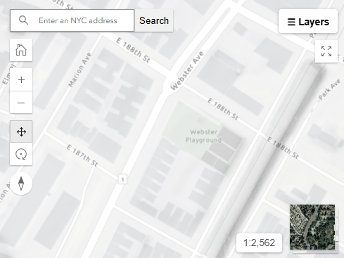
Map Navigation Controls
The application provides a set of navigation and display controls overlaid on the map view that allow planners to move around the map, return to the default citywide view, expand the map to fill the browser window, switch between basemap styles, and monitor the current map scale. These controls are visible across both 2D and 3D modes, with one exception (the scale indicator) noted below. The controls described in this section are distinct from the Layer Control Panel and Map Legend, which are documented separately.
Zoom and Pan
Standard zoom-in (+) and zoom-out (−) buttons are located in the top-left corner of the map. Clicking the + button zooms the map in by one increment; clicking the − button zooms it out by one increment. The same effect can be achieved by scrolling the mouse wheel up or down while the cursor is over the map, or by using the + and − keys on the keyboard. Double-clicking anywhere on the map zooms in centered on the cursor's position.
To pan the map, click anywhere on the map and drag in any direction; the map will follow the cursor until the mouse button is released. Pan navigation can also be performed with the arrow keys on the keyboard, which move the view a small step in the indicated direction. Additional gestures are available at all times but most useful when the map is in 3D mode: right-click-and-drag rotates and tilts the camera around the current center of the view, allowing the user to look at buildings and terrain from different angles.
Compass and North Arrow
A compass widget is displayed in the top-left corner of the map. The compass rotates to indicate the current direction of north relative to the map orientation: when the map is oriented with north pointing up, the compass needle points straight up. When the user has rotated the camera to a non-north heading, the compass rotates correspondingly so that it always points to true north. Clicking the compass resets the map heading to north up (heading of 0 degrees), which can be useful for reorienting after extended exploration in 3D mode. The compass is most informative in 3D mode, where heading changes are more commonly used.
Custom Home Button
A home button, identified by a house icon, is located in the top-left corner of the map directly beneath the address search bar. Clicking this button returns the map to the application's default citywide view of New York City: centered on lower Manhattan at coordinates 40.7128° N, 74.006° W and zoomed out to a scale that displays all five boroughs. The transition is smoothly animated over approximately one second rather than snapping instantaneously.
The home button is a custom-built control rather than the ArcGIS Maps SDK's standard Home widget. The reason for this customization is to preserve the user's camera orientation in 3D mode: when the home button is clicked in 3D mode, the map recenters on the default NYC location at the default zoom level, but the user's current camera tilt and heading are preserved. This means a planner who has tilted and rotated the camera to examine a particular block can reset to the citywide view without losing their preferred 3D viewing angle. In 2D mode, the home button resets tilt to 0 (top-down), which is the standard 2D perspective.
Navigation Toggle
A navigation toggle button is located in the top-left corner of the map, beneath the zoom controls and home button. It is identified by two stacked icons: a cross composed of bidirectional arrows (pan mode) and a circular arrow curving around a point (rotate mode). The widget switches between two click-and-drag behaviors:
- Pan mode (the default) — clicking and dragging on the map moves the camera horizontally across the city.
- Rotate mode — clicking and dragging on the map rotates and tilts the camera around its current center point, allowing the user to examine buildings and terrain from different angles.
The same rotate-and-tilt behavior available in rotate mode can also be performed at any time using the right mouse button (right-click-and-drag) without switching modes. The navigation toggle is therefore most useful for planners working on a device without a right mouse button, or for those who prefer to keep the left mouse button as their primary input. This widget is most practically useful when the application's 3D mode is active, but rotate mode can still be activated in 2D mode if the planner wants to manually tilt the camera away from the default top-down perspective.
Fullscreen Mode
A fullscreen button is located in the top-right corner of the map, identified by an icon of four outward-pointing arrows. Clicking this button expands the map view to fill the entire browser window, hiding the sidebar and the browser's own user interface elements (tabs, address bar, etc.). Fullscreen mode is useful for presentations, screen sharing during meetings, or any situation in which the planner wants the maximum possible screen area devoted to the map.
To exit fullscreen mode, click the fullscreen button again (its icon will have changed to inward-pointing arrows) or press the Esc key on the keyboard. All map functionality remains fully available in fullscreen mode; only the surrounding browser and sidebar elements are hidden.
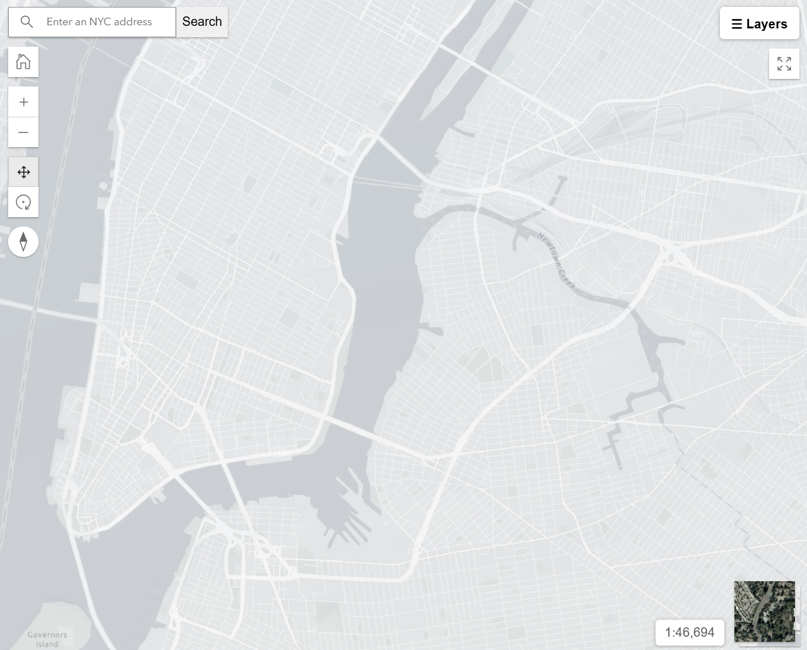
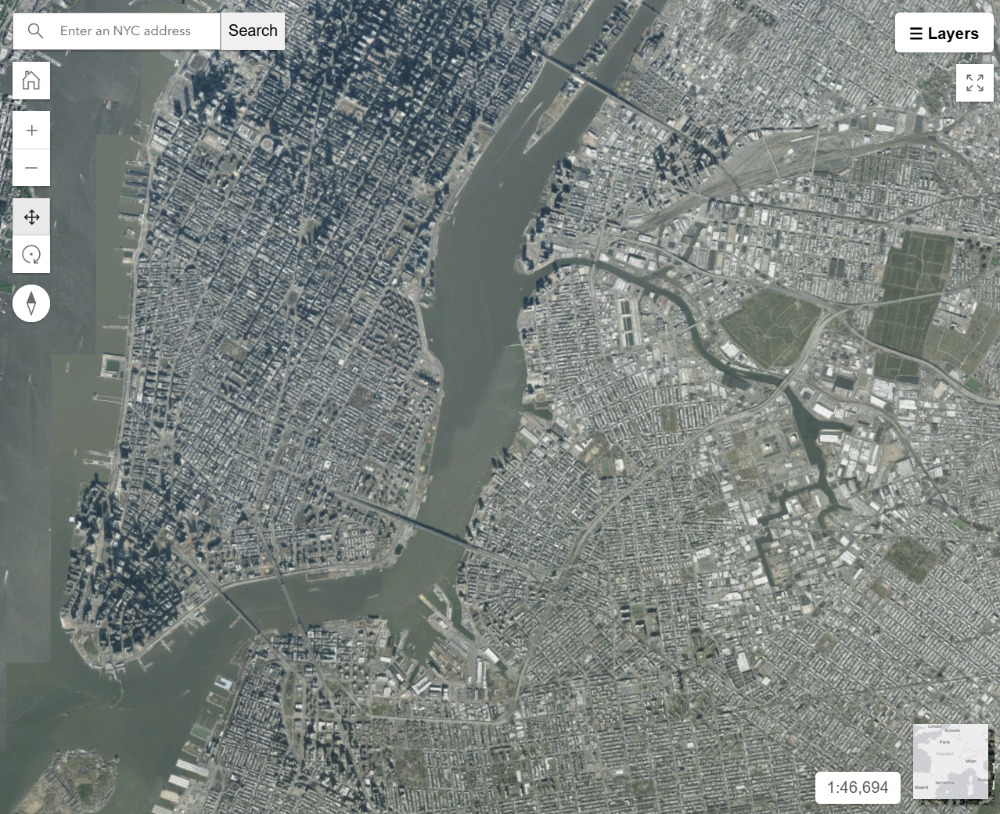
Basemap Toggle
A basemap toggle button is located in the bottom-right corner of the map. The button displays a thumbnail preview of the alternate basemap (the one that will be activated when clicked), not the currently active basemap. The application is configured with two basemap options:
- Light gray vector (the default) — a muted, low-contrast vector basemap that emphasizes the application's data layers without competing for visual attention. This is the recommended basemap for most analytical workflows.
- Satellite imagery — high-resolution aerial imagery. Useful for ground-truthing the application's data layers against real-world conditions (for example, confirming what a "spray shower" or "cooling site" actually looks like on the ground, or verifying that a candidate fountain location is in a publicly accessible area).
Clicking the basemap toggle switches between the two options. Toggling does not affect the visibility of any of the application's data layers or its 3D buildings layer — only the underlying basemap changes.
Scale Indicator
A custom scale indicator is displayed in the bottom-right corner of the map, immediately to the left of the basemap toggle. The indicator displays the current map scale as a representative ratio (for example, 1:25,000), updating in real time as the user zooms in or out. A smaller denominator indicates a more zoomed-in view, and a larger denominator indicates a more zoomed-out view.
The scale indicator is particularly useful in conjunction with the Tree Canopy Cover and Building Footprints layers, both of which can only be rendered at a scale of 1:25,000 or finer (see the 2D Data Layers section for details). Planners can use the indicator to confirm that they have zoomed in far enough for these layers to display before attempting to activate them.
The scale indicator is automatically hidden in 3D mode. This is because the underlying ArcGIS Maps SDK does not produce a reliable scale measurement when the camera is tilted at an oblique angle — the scale at the top of the screen differs from the scale at the bottom, and a single representative fraction would be misleading. The indicator reappears automatically when the application is returned to 2D mode.
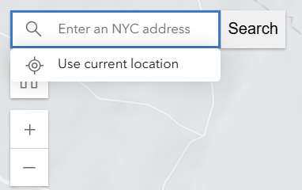
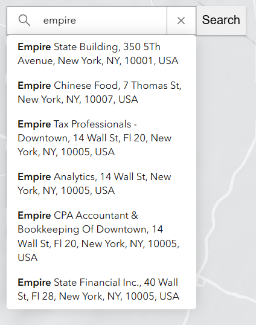
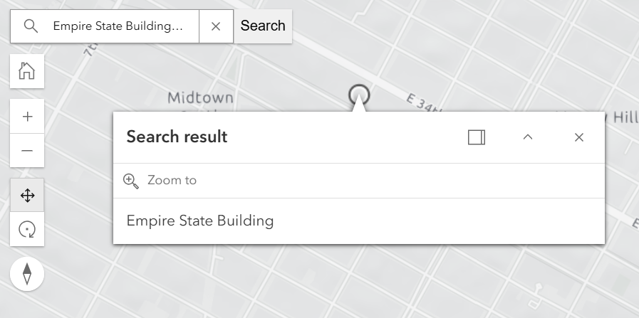
Address Search
The application includes an Address Search bar in the top-left corner of the map view, immediately above the navigation controls. The search bar accepts a New York City street address typed by the user and zooms the map to the entered location. It also supports an alternative option to locate the user's current geographic position, described below.
To use the search bar, click into the input field and begin typing an address. As you type, an autocomplete dropdown appears below the input field with suggested matches. Click a suggestion to select it, or finish typing the full address. then press Enter or click the Search button to the right of the input field to submit. Once a result is selected, the map automatically zooms to the corresponding location and places a marker at the address. Any layers currently active remain visible, allowing the planner to immediately assess heat risk and existing mitigation features in the vicinity of the searched location. A popup appears alongside the marker displaying the resolved address; this popup can be dismissed by clicking the X in its top-right corner.
Address geocoding is performed by Esri's ArcGIS World Geocoding Service, with the search results biased to New York City via a bounding-box parameter covering the five boroughs. This bias is a strong preference rather than a hard cutoff: the World Geocoder will prioritize matches within the NYC bounding box, but unambiguous addresses outside the bounding box can still resolve if no in-NYC match is found. Search results are restricted to addresses within the United States.
Use Current Location
If you click into the search input field but do not begin typing, a dropdown menu appears beneath the field offering a Use current location option, accompanied by a small crosshairs icon. Clicking this option prompts the browser to request permission to access your device's geographic position. If you grant permission, the application uses the browser's HTML5 Geolocation API to determine your coordinates and zoom the map to your location, placing a marker there as it would for any other search result.
The accuracy of the result depends on what positioning information your device makes available to the browser: a desktop or laptop computer without GPS will typically resolve to an approximate location based on network signals (often accurate only to within a block or two, and occasionally substantially less accurate than that), while a device with GPS will return a more precise position. For planners working within New York City, this option can be a quick way to zoom to the immediate vicinity of their office or fieldwork location without typing a full address.
The Use current location feature requires a secure (HTTPS) connection to function, which the application's GitHub Pages deployment provides automatically. If you decline the browser's permission prompt, or if your browser's privacy settings block geolocation entirely, the option will not return a result and you can fall back to typing an address manually.
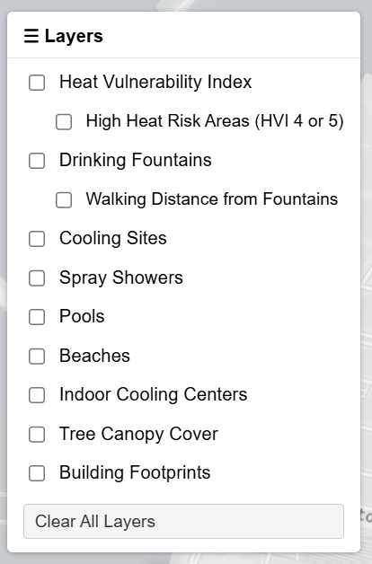
Layer Control Panel
The Layer Control Panel is the primary mechanism by which users can activate and deactivate the application's 2D data layers. It is located in the top-right corner of the map view and is presented as a collapsible button displaying an icon with three horizontal lines next to the word Layers. The panel is collapsed by default when the application first loads; clicking the button expands the panel and reveals the full list of available layers as a series of checkboxes. Clicking the button again collapses the panel back to its single-button state. Collapsing the panel does not affect the visibility of any layers on the map — it only hides the panel's controls from view.
Each layer's checkbox toggles its visibility on the map: checking the box adds the layer to the map, and unchecking the box removes it. Multiple layers can be active simultaneously. The order of layers in the panel is independent of the layer stacking order on the map, which is configured separately to ensure that polygon layers are drawn beneath point layers — see the 2D Data Layers section for details.
Two layers in the panel have associated sub-controls, displayed as indented checkboxes immediately beneath their parent layer:
- The High Heat Risk Areas (HVI 4 or 5) sub-control, indented beneath the Heat Vulnerability Index layer, filters the HVI layer to only those Community Districts with the highest heat vulnerability scores.
- The Walking Distance from Fountains sub-control, indented beneath the Drinking Fountains layer, activates the client-side-generated quarter-mile walking distance buffer around all drinking fountains.
Both sub-controls operate independently of their parent layer's checkbox — that is, the High Heat Risk filter does not require the main HVI layer to be checked, and the walking distance buffer does not require the Drinking Fountains layer to be checked. The exact interaction logic of these sub-controls is described in detail in the 2D Data Layers section.
The application enforces a scale-dependent visibility threshold on the Tree Canopy Cover and Building Footprints layers, both of which contain very large numbers of features and would degrade performance if rendered at zoomed-out scales. When the map is zoomed out beyond a scale of 1:25,000, the checkboxes for these two layers are automatically disabled, greyed out, and given a tooltip that appears when the cursor hovers over the layer label. This tooltip reads "Zoom in to enable this layer." The checkboxes become active again automatically once the user zooms in past the threshold. See the 2D Data Layers section for further detail.
At the bottom of the panel is a Clear All Layers button. Clicking this button unchecks every active layer in the panel in a single action, removing all 2D layers from the map and returning it to the empty default state. The button is most useful for resetting the map after experimenting with multiple layer combinations, or for transitioning between distinct analytical tasks without manually unchecking each layer in turn. The button does not affect the 2D / 3D mode toggle or any 3D-specific tools.
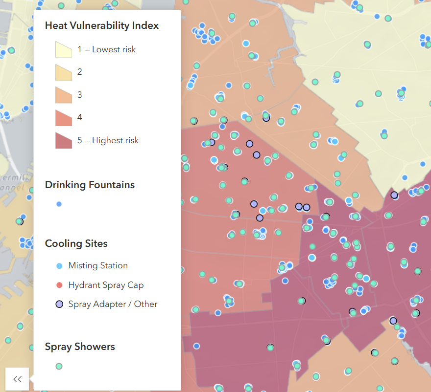
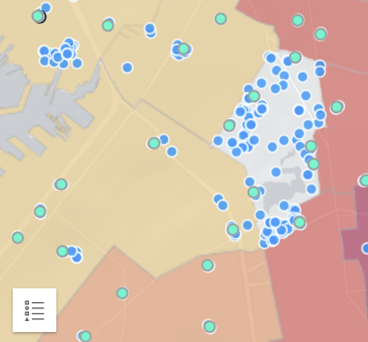
Map Legend
The application includes a map legend that displays the symbology of the 2D data layers currently active on the map. The legend is located in the bottom-left corner of the map view and is rendered as a collapsible widget: it opens automatically when at least one of the 2D data layers is activated on the map via the Layer Control Panel and is bound to a button with two left-pointing arrows. Clicking this button collapses the legend, and the icon on the button changes to one representing a legend. Clicking this button again re-opens the legend panel, showing the symbology of each visible layer. The legend's contents are organized by layer, with each layer's name displayed as a header above its symbology entries.
The legend is dynamic: it only displays entries for layers that are currently active on the map. When a layer is toggled on through the Layer Control Panel, an entry for that layer is automatically added to the legend; when a layer is toggled off, its entry is removed. The order of entries in the legend approximately mirrors the order of layers in the Layer Control Panel, with the Heat Vulnerability Index layer appearing first when active.
The legend is also scale-aware: if a scale-aware layer is active but the map is zoomed out beyond its minimum scale threshold (i.e. 1:25,000 for Tree Canopy Cover and Building Footprints, as described in the Layer Control Panel section), the layer's entry is automatically hidden from the legend, since the layer itself is not rendering on the map at that scale. The entry reappears once the user zooms in past the threshold.
The legend is automatically hidden in 3D mode, regardless of which 2D layers are active. The 3D view is focused on shadow analysis rather than 2D layer interpretation, and the legend is restored when the application returns to 2D mode. The legend is also hidden when no 2D layers are visible — including at startup, when all layers are off by default — and reappears automatically once at least one 2D layer becomes active. Additionally, the legend automatically collapses to its icon state when the browser window is narrower than approximately 886 pixels, to prevent the expanded legend from overflowing and covering the map; the user can manually re-expand it after widening the window.
One known limitation of the legend is that the Drinking Fountain Walking Distance Buffer layer is not represented. The buffer is rendered using an ArcGIS Graphics Layer rather than a standard Feature Layer (because it is generated client-side at runtime), and the ArcGIS Maps SDK's Legend widget does not support Graphics Layer entries. As a partial substitute, the buffer is configured with a click-to-identify popup that opens when the user clicks anywhere within the buffer polygon, displaying a short description of what the layer represents.
2D Data Layers
Overview
The application includes ten 2D data layers covering the two core phenomena the app is designed to support analysis of: the spatial distribution of summer heat risk in New York City, and the spatial distribution of existing heat mitigation features in the city. The single layer covering heat risk represents the Heat Vulnerability Index (HVI), a citywide measure of neighborhood-level vulnerability to heat-related death. The remaining eight layers cover existing heat mitigation features and supporting urban context: Drinking Fountains, Cooling Sites, Spray Showers, Pools, Beaches, Indoor Cooling Centers, Tree Canopy Cover, and Building Footprints. The Drinking Fountains layer additionally has an associated Walking Distance from Fountains layer representing the area of NYC within walking distance of a public drinking fountain.
All 2D data layers are turned off by default when the application loads. They are activated through the Layer Control Panel (described elsewhere in this manual) and can be toggled on and off independently. Multiple layers can be active simultaneously. The application is configured with a deliberate layer stacking order so that polygon layers (HVI, beaches, building footprints, tree canopy cover, fountain walking distance buffer) are drawn beneath point layers (drinking fountains, cooling sites, spray showers, indoor cooling centers, pools). This ordering ensures that point features remain visible and clickable when multiple layers are overlaid.
Contextual information about each 2D data layer is also available directly within the application's sidebar. Below the application's summary text and map controls, the sidebar contains a series of expandable panels — one per 2D data layer — that briefly describe the layer's underlying dataset, source agency, vintage, and the features it depicts. Clicking the name of a layer expands its panel; clicking again collapses it. The information in those panels is intended as a quick at-a-glance reference within the application itself; this section of the user manual provides a more exhaustive description of each layer.
Popups on Feature Click
Most 2D data layers are configured with interactive pop-ups. Clicking on a feature on the map, whether a polygon (such as a Community District in the HVI layer) or a point (such as a drinking fountain), opens a pop-up containing attribute information about that specific feature. The exact contents of each pop-up vary by layer and are described in the relevant subsections below.
Two layers (Tree Canopy Cover and Building Footprints) do not have popups configured. These are context layers rather than primary analytical layers and contain large numbers of features for which feature-level interaction would not be meaningful for heat planning purposes.
For polygon layers, popups are triggered by clicking anywhere within the polygon boundary. For point layers, popups are triggered by clicking on the point symbol itself; clicking adjacent to (but not directly on) a point will not trigger a popup. The HVI polygon layer is rendered with 60% opacity specifically so that it can serve as a backdrop for other layers without obscuring the contextual basemap.
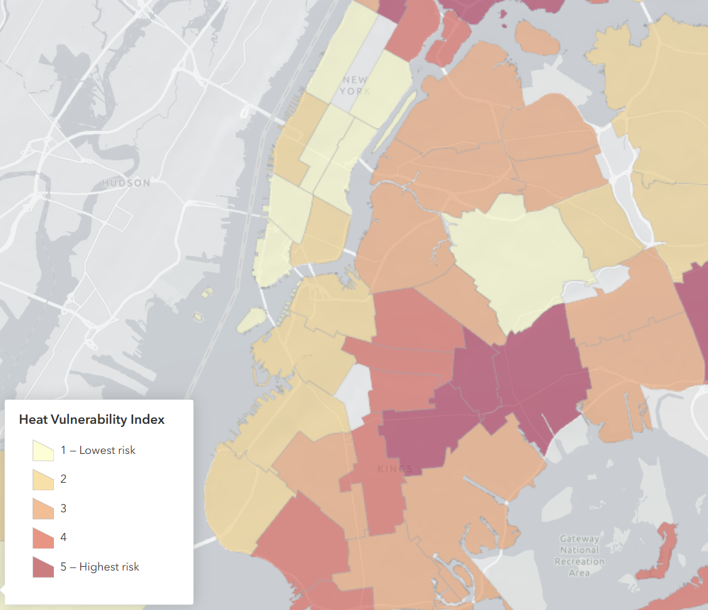
Heat Vulnerability Index (HVI)
The Heat Vulnerability Index (HVI) layer classifies the Community Districts of New York City by their relative risk of heat-related death during extreme heat events. The HVI metric was developed by the New York City Department of Health and Mental Hygiene (DOHMH) and was last updated in 2023. Each Community District is assigned an HVI score between 1 (lowest risk) and 5 (highest risk), and the layer is symbolized using a color ramp in which darker colors indicate higher heat vulnerability scores.
Community Districts are administrative subdivisions of the five boroughs of New York City — there are 59 in total. They correspond roughly to recognizable neighborhood groupings (for example, "Park Slope and Carroll Gardens" or "Morningside Heights and Hamilton Heights"). The HVI layer covers the full extent of these districts across all five boroughs.
The HVI score itself is calculated by NYC DOHMH using a statistical model based on five input variables that together capture the most important social and environmental factors contributing to neighborhood heat risk:
- Median household income — from the U.S. Census American Community Survey 2016–2020 5-year estimates.
- Percent vegetative cover (trees, shrubs, or grass) — derived from 2017 LiDAR data analyzed by the New York City Office of Technology and Innovation.
- Percent of population reported as non-Hispanic Black — from the U.S. Census American Community Survey 2016–2020 5-year estimates.
- Average surface temperature in Fahrenheit — derived from NASA's ECOSTRESS thermal imaging sensors aboard the International Space Station, captured on August 27, 2020.
- Percent of households reporting air conditioning access — from the U.S. Census Housing and Vacancy Survey, 2017.
The selection of these particular variables reflects the impact that structural racism has historically had on access to heat mitigation resources in the United States; the HVI metric is not solely a measure of physical heat exposure but is designed to integrate exposure with social vulnerability factors that affect a community's capacity to cope with extreme heat. It is therefore well suited to use as a planning input for directing heat mitigation resources across NYC neighborhoods.
Clicking on any Community District opens a pop-up displaying the following attributes:
- Borough — the borough in which the Community District is located.
- Community District — the numeric identifier of the Community District (e.g., "109" for Manhattan Community District 9).
- Neighborhood — the colloquial neighborhood name(s) associated with the Community District.
- HVI Score — the Community District's HVI score on a scale of 1 to 5.
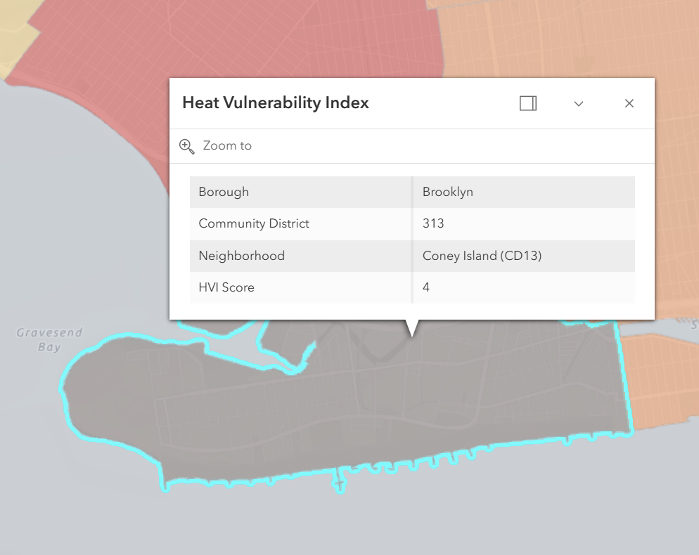
More detailed information about the HVI methodology and underlying data is available on the NYC DOHMH HVI page and the DOHMH Climate Data Explorer.
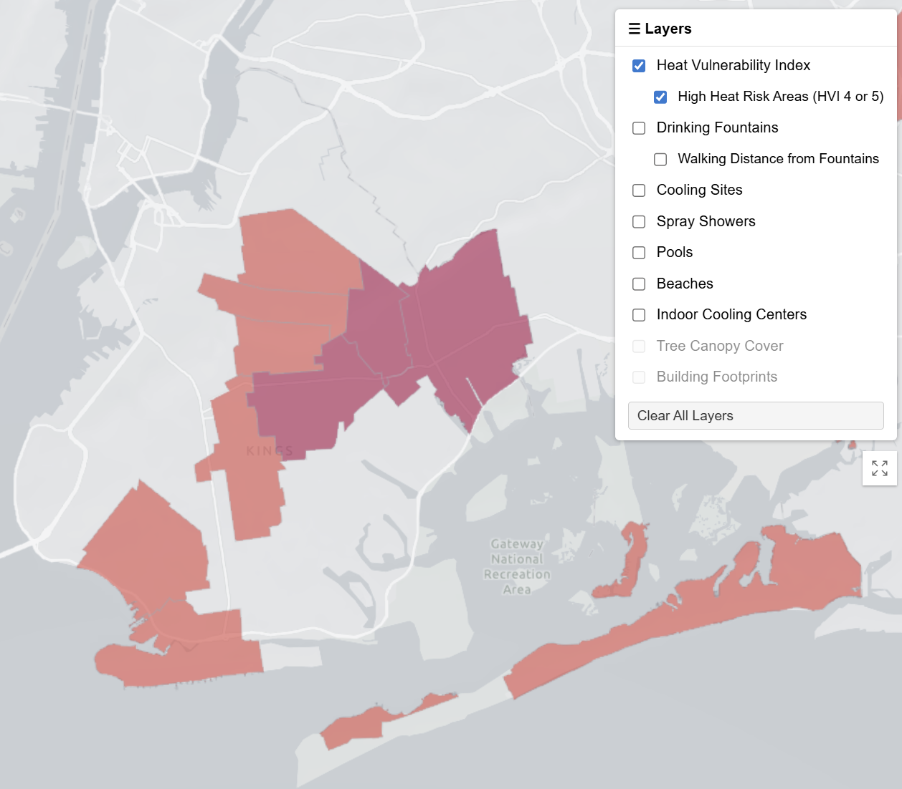
High Heat Risk Areas (HVI 4 or 5) Filter
A separate sub-control labeled High Heat Risk Areas (HVI 4 or 5) is available in the Layer Control Panel, indented beneath the main Heat Vulnerability Index control. When this sub-control is checked, the HVI layer is filtered to display only Community Districts with an HVI score of 4 or 5 (those with the highest risk of heat-related death during extreme heat events). All Community Districts with HVI scores of 1, 2, or 3 are hidden on the map.
The two HVI controls (the main layer toggle and the high-risk filter sub-toggle) interact as follows:
- If neither is checked, the HVI layer is hidden entirely.
- If only the main HVI toggle is checked, the full HVI layer is displayed (all five score classes).
- If the high-risk filter sub-toggle is checked, the HVI layer is displayed but filtered to HVI scores of 4 or 5 only, regardless of whether the main HVI toggle is checked.
The high-risk filter is the recommended starting point for the application's primary use case of identifying candidate locations for new public drinking fountains: by activating only the high-risk filter, planners can immediately focus on the Community Districts where new mitigation investments would yield the greatest potential public health benefit.
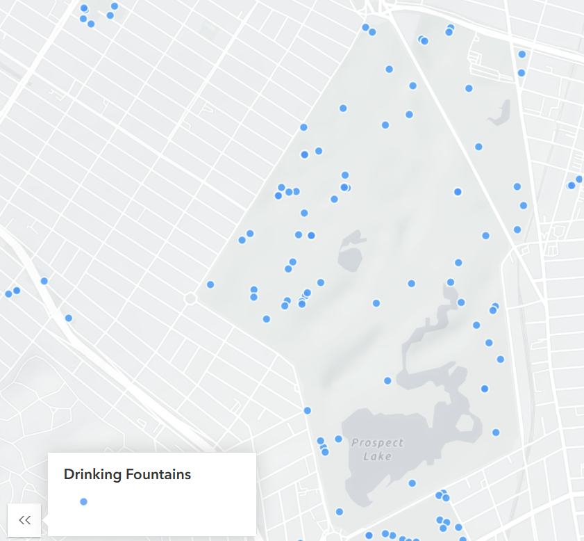
Drinking Fountains
The Drinking Fountains layer depicts every drinking fountain located on properties managed by the New York City Department of Parks and Recreation (DPR). The underlying dataset is maintained by DPR and was last updated in November 2024. Drinking fountains are rendered as small bright blue circular point markers on the map.
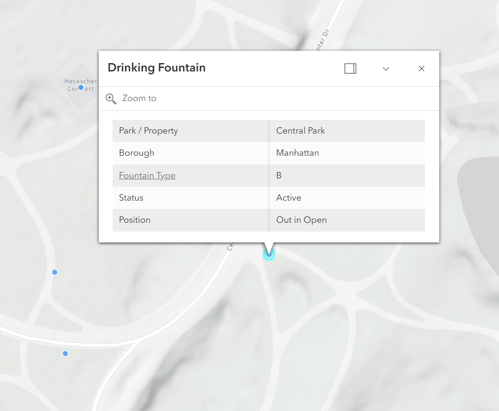
Clicking on a drinking fountain opens a popup displaying the following attributes:
- Park / Property — the name of the DPR property in which the fountain is located.
- Borough — the borough in which the fountain is located. The underlying dataset stores borough as a single-character code (M, B, Q, X, R); the popup automatically expands these to their full names (Manhattan, Brooklyn, Queens, The Bronx, Staten Island) for readability.
- Fountain Type — the type of fountain (e.g., standard fountain, bottle filler, etc.). The Fountain Type label in the pop-up links to a reference document describing what all non-descriptive fountain type codes represent.
- Status — whether the fountain is active.
- Position — the position of the fountain (e.g., wall-mounted, freestanding, etc.).
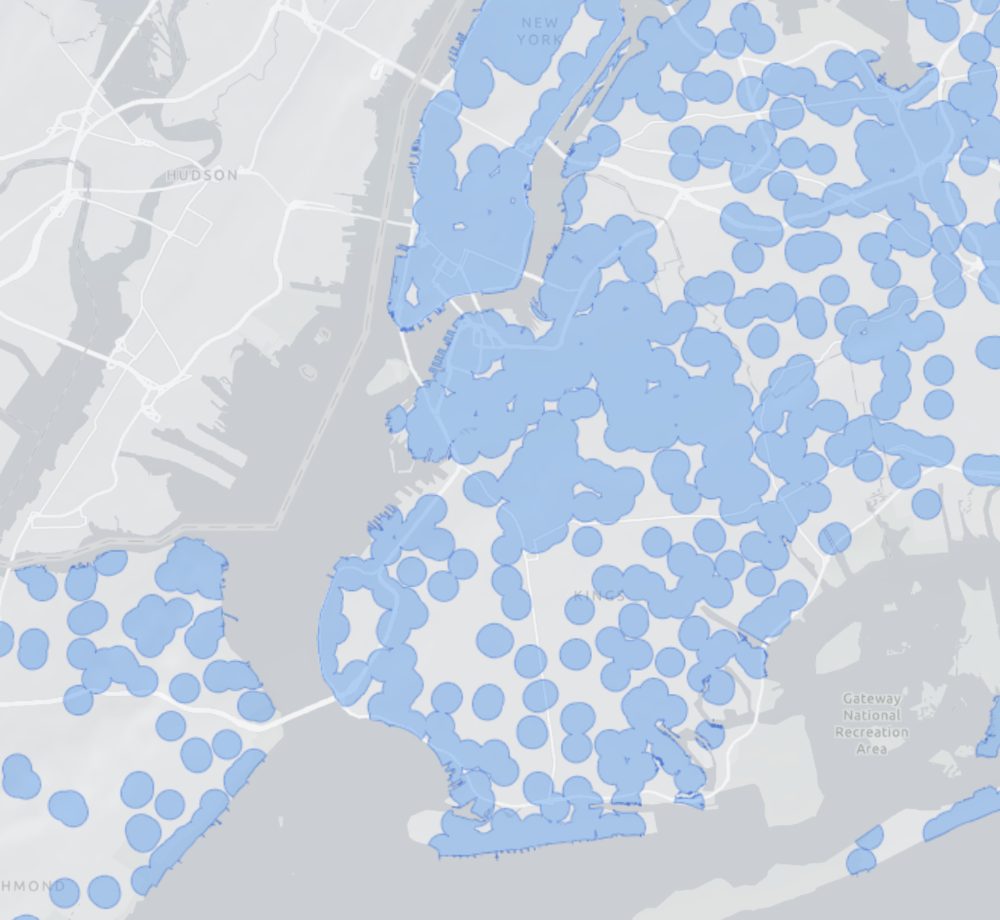
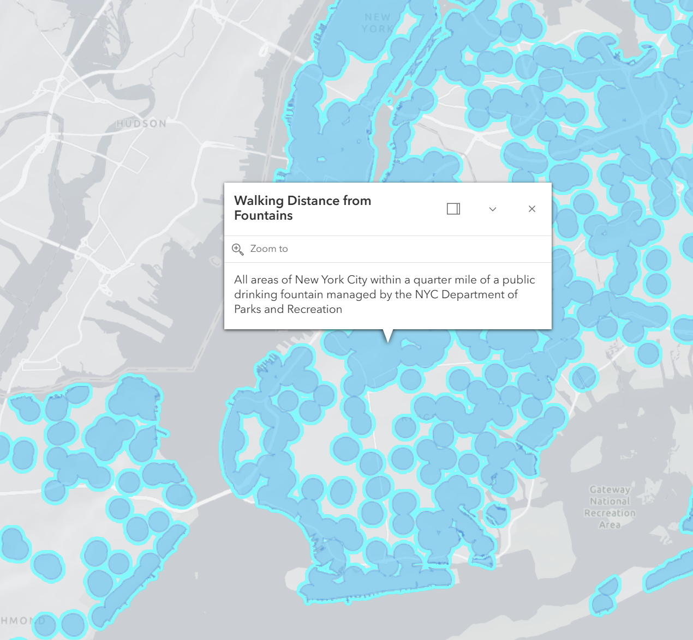
Walking Distance from Fountains
A separate sub-control labeled Walking Distance from Fountains is available in the Layer Control Panel, indented beneath the main Drinking Fountains control. When this sub-control is checked, the application displays a single blue, semi-transparent polygon layer representing the area of New York City within a quarter-mile (approximately 402 meters) of any drinking fountain in the Drinking Fountains layer. This buffer distance reflects the standard rule of thumb in New York City planning practice for what constitutes reasonable walking distance for a pedestrian.
Unlike the other 2D data layers, the walking distance buffer is generated entirely client-side at runtime rather than being loaded from a feature service. When the application first loads, it queries every drinking fountain feature from the underlying service, then computes a geodesic buffer of 402 meters around each fountain location (a geodesic buffer measures distance along the curved surface of the earth and is more accurate than a planar buffer for distance measurements over a city-wide area). The individual buffers around each fountain are then dissolved into a single unified polygon, and that polygon is intersected with the union of all NYC Community District/Joint Interest Area polygons (drawn from the HVI layer) to clip the result to just areas of land within the city, preventing the buffer from extending into the surrounding waterways.
Due to its client-side generation, the walking distance buffer is not available immediately when the application loads. The buffer generation requires several seconds of processing after the initial page load, during which the buffer layer cannot yet be displayed, even if its checkbox is activated. If you check the box and the buffer does not appear, wait a few moments, and the polygon layer will render once the calculation completes.
The buffer is rendered as a semi-transparent blue fill (approximately 40% opacity) with a slightly more saturated blue outline. This transparency is intentional: it allows underlying layers like the HVI layer and the basemap to remain visible and interpretable beneath the buffer, which is essential for the application's primary use case of identifying high heat risk areas that lack walking distance access to a drinking fountain.
The most analytically powerful use of this layer is in combination with the High Heat Risk Areas (HVI 4 or 5) filter. Activating both layers together highlights the Community Districts with the highest heat vulnerability and visually identifies the portions of those districts that are not covered by the buffer — that is, areas of high heat risk where residents do not currently have walking-distance access to a public drinking fountain. These are the candidate areas for new fountain installations that the application is specifically designed to help planners identify.
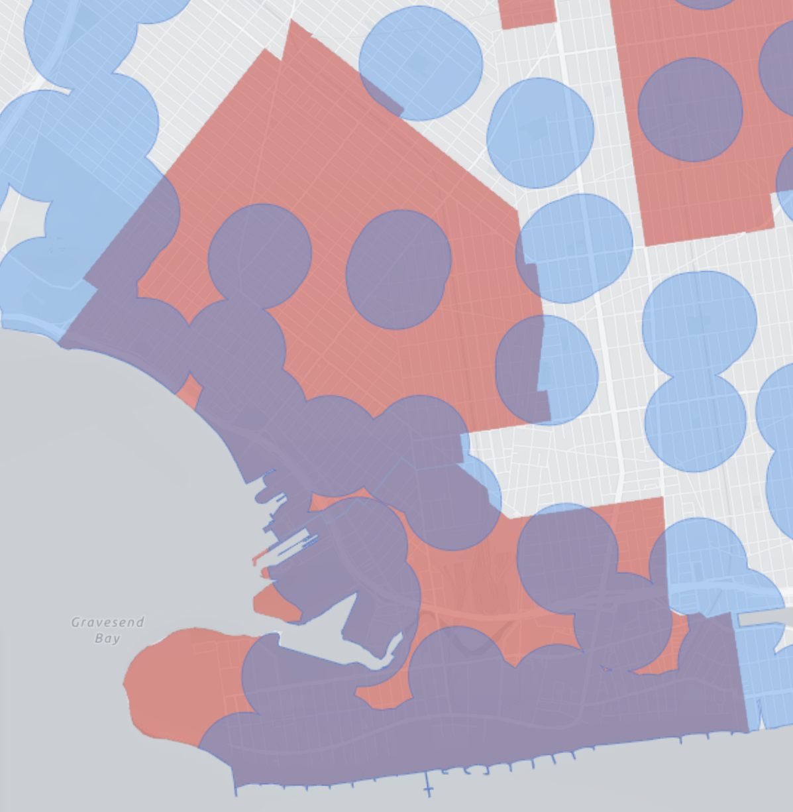
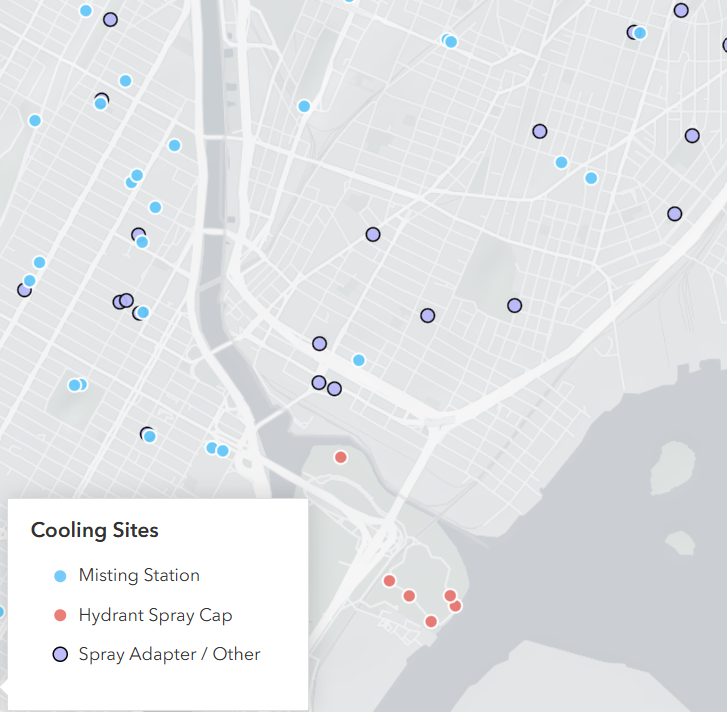
Cooling Sites
The Cooling Sites layer depicts 271 outdoor heat mitigation amenities installed in New York City in or after July 2020 by DPR as part of its Cool It! NYC 2020 program. This program was launched specifically to expand the public's access to cooling features during extreme heat events, with new amenities intentionally directed toward NYC neighborhoods identified as having high heat risk (an HVI score of 4 or 5). The Cool It! amenities included in this layer fall into several categories:
- Misting stations — fixtures that release a fine spray of water to cool the surrounding air and people in proximity.
- Hydrant spray caps — caps that attach to fire hydrants to allow controlled water spray during heat events.
- Spray adapters — attachments that convert public water elements into directed-spray cooling features.
- Other spray shower amenities installed under the program.
In the application, Cooling Sites are color-coded by amenity type using a unique-value renderer: misting stations are rendered in pale blue, hydrant spray caps are rendered in red, and spray adapters or other amenity types are rendered in light purple with a black border. This color coding allows planners to distinguish between the different types of cooling amenities at a glance.
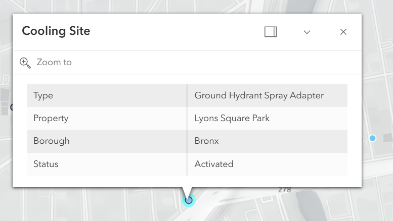
Clicking on a Cooling Site opens a pop-up displaying the following attributes:
- Type — the type of cooling amenity.
- Property — the name of the DPR property where the amenity is located.
- Borough — the borough in which the amenity is located.
- Status — whether the amenity is currently activated.
Because Cool It! NYC 2020 Cooling Site amenities were intentionally targeted toward high heat risk neighborhoods, this layer is a useful counterpart to the HVI layer for understanding where existing heat-emergency cooling investments have already been concentrated. Sparsity of Cool It! amenities in a high HVI area may indicate either a remaining unmet need or that other types of mitigation features are already serving the area; planners can compare this layer against drinking fountains, spray showers, and indoor cooling centers to make that determination. More information about the Cool It! The NYC 2020 dataset is available on the NYC Open Data portal.
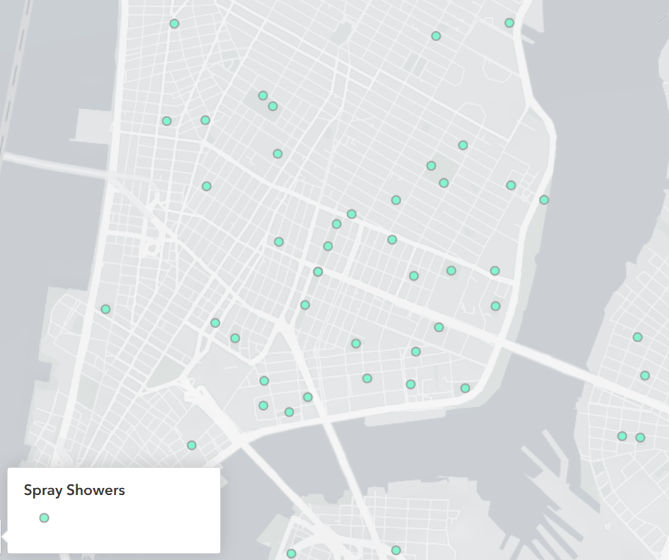
Spray Showers
The Spray Showers layer depicts outdoor spray showers located on DPR-managed properties. Spray showers are permanent water spray fixtures (distinct from the spray adapters and hydrant spray caps in the Cool It! Cooling Sites layer) that are typically installed as part of playground or park infrastructure. The layer is derived from a citywide dataset called NYC Cool Options, maintained by the New York City Office of Technology and Innovation (OTI) for public consumption. In the application, the Spray Showers layer is created as a separate Feature Layer from the Cool Options service, filtered server-side to only those records where the underlying Space type field indicates “Spray Shower”.
Spray Showers are rendered as small aquamarine circular point markers with a gray border — visually distinct from the bright blue Drinking Fountains and the variously colored Cooling Sites symbols.
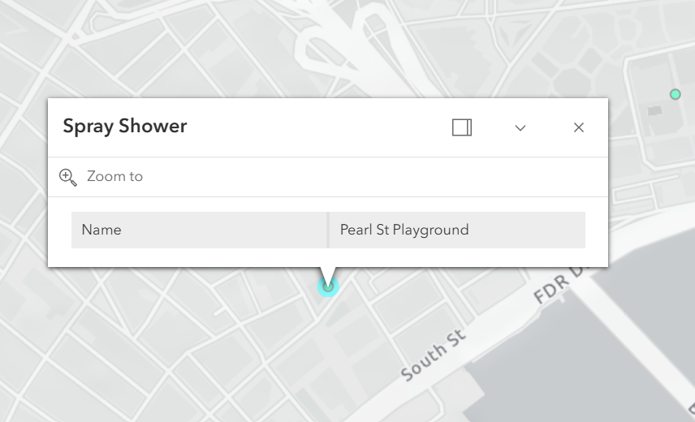
Clicking on a Spray Shower opens a popup displaying the following attribute:
- Name — the name of the DPR property in which the spray shower is located.
More information about spray showers in DPR properties is available on the NYC Open Data portal and the NYC Parks website.
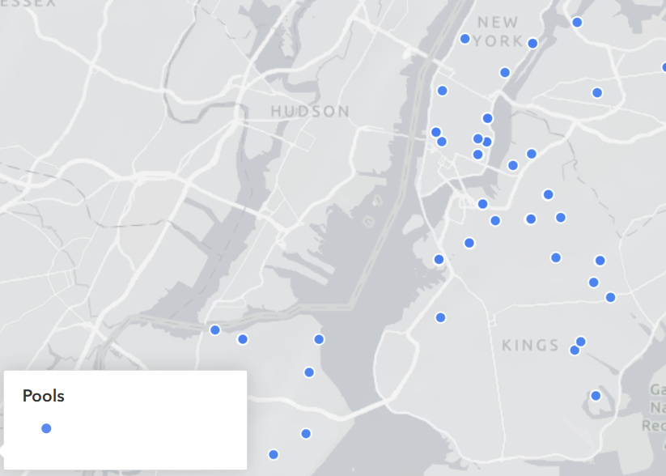
Pools
The Pools layer depicts every public indoor and outdoor pool under the jurisdiction of the New York City Department of Parks and Recreation (DPR). The underlying dataset is maintained by DPR and was last updated in March 2026. The original DPR dataset represents pools as polygons; in this application, those polygons have been converted to point features representing the centroid of each pool, which display more cleanly at city-wide and neighborhood-level zoom scales than full polygons would. Pools are rendered as Dodger blue circular point markers.
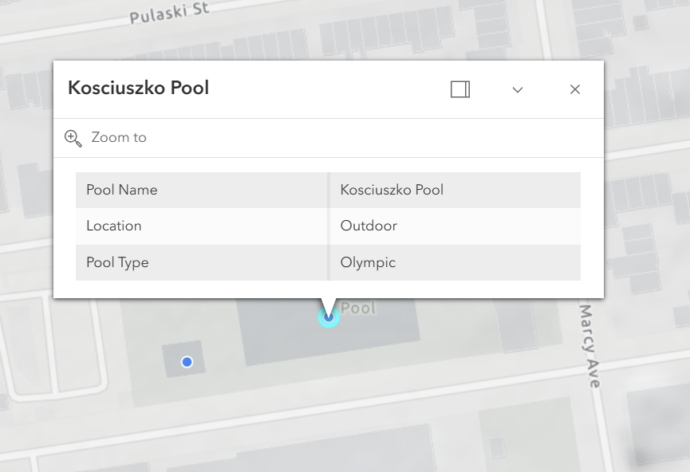
Clicking on a Pool opens a popup displaying the following attributes:
- Pool Name — the name of the pool.
- Location — whether the pool is indoor or outdoor.
- Pool Type — the type of pool (e.g., main pool, intermediate pool, wading pool).
Note that the Pools layer is the only 2D data layer in the application loaded from a local GeoJSON file rather than from a remote ArcGIS REST feature service. All other data layers stream their features from public REST endpoints at runtime. More information about the underlying DPR pools dataset is available on the NYC Open Data portal.
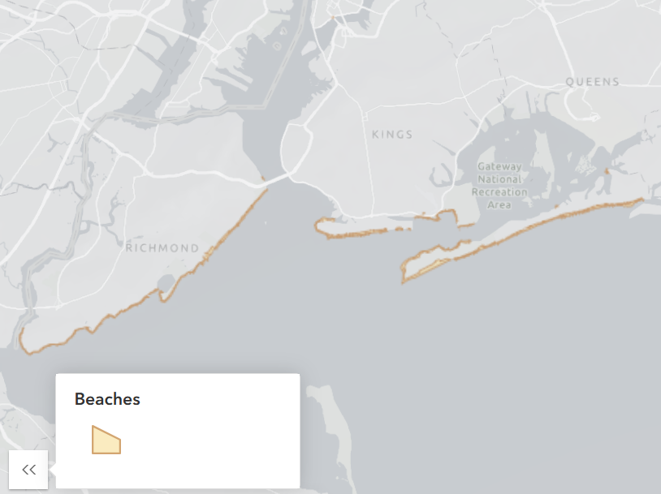
Beaches
The Beaches layer depicts public and private beaches in New York City as polygonal areas. The underlying dataset is maintained by the New York City Department of City Planning (DCP) and was last updated in April 2024. Beaches are rendered as sand-colored polygon fills with a slightly darker outline.
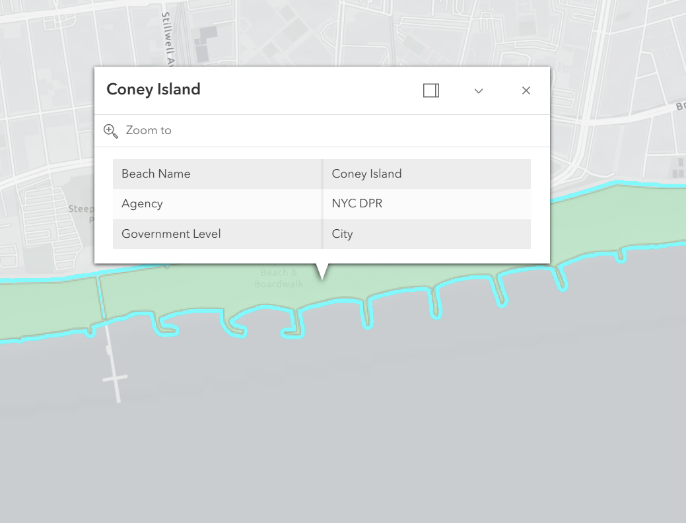
Clicking on a Beach polygon opens a popup displaying the following attributes:
- Beach Name — the name of the beach.
- Agency — the agency responsible for the beach's oversight.
- Government Level — the level of government to which the responsible agency belongs (city, state, or federal).
The Beaches layer is configured to render with its polygon geometry draped onto the terrain surface (rather than at sea level), which ensures the polygons display correctly when the application is in 3D mode. Without this setting, the polygons would render at sea level and inland portions of beaches would appear to sink below the modeled terrain. More information about NYC beaches is available on the NYC Open Data portal.
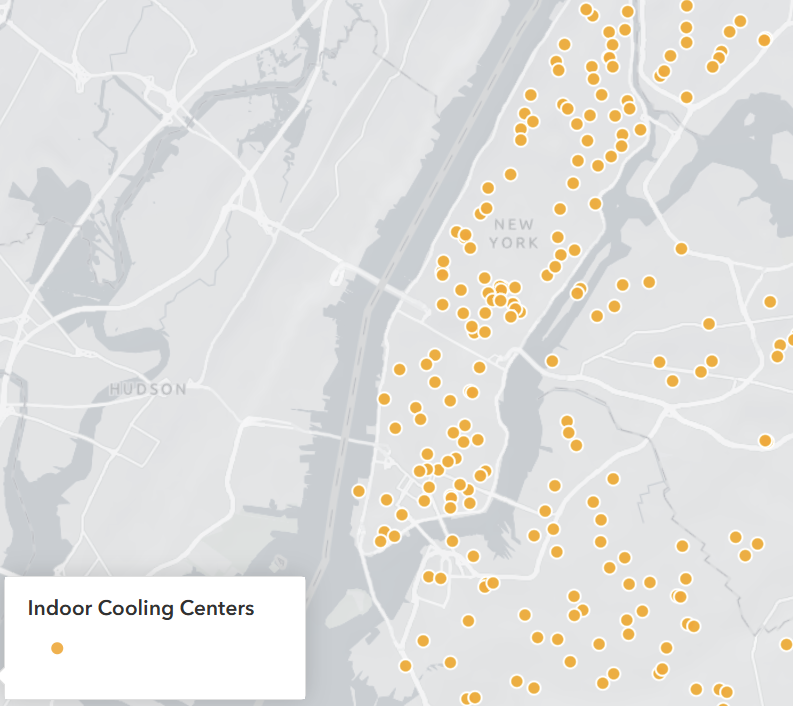
Indoor Cooling Centers
The Indoor Cooling Centers layer depicts air-conditioned indoor facilities that are designated as cooling centers for the public during heat emergencies in New York City. Like the Spray Showers layer, this layer is derived from the NYC Cool Options dataset maintained by OTI; it is filtered server-side to only those records where the underlying Space type field indicates “Cooling Center” or “Other Indoor Cool Option”.
Cooling centers are activated by the city when the National Weather Service issues a heat advisory with a forecasted heat index of 95 degrees Fahrenheit or higher for two or more consecutive days, or 100 degrees Fahrenheit for any duration of time. The underlying facilities include public libraries, community centers, Older Adult Centers, NYCHA facilities, and Privately Owned Public Spaces (POPS). Indoor Cooling Centers are rendered as small orange circular point markers.
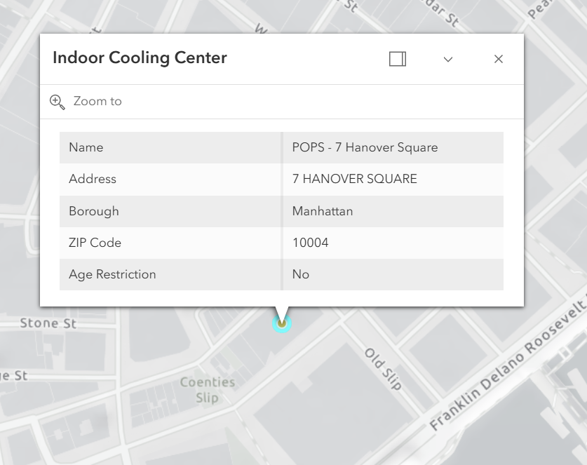
Clicking on an Indoor Cooling Center opens a popup displaying the following attributes:
- Name — the name of the facility.
- Address — the street address of the facility.
- Borough — the borough in which the facility is located.
- ZIP Code — the ZIP code of the facility.
- Age Restriction — whether the facility has any age restrictions on its use (some cooling centers, such as Older Adult Centers, are restricted to particular age groups).
More information about indoor cooling centers in NYC, including the criteria for their activation, is available on NYC 311.
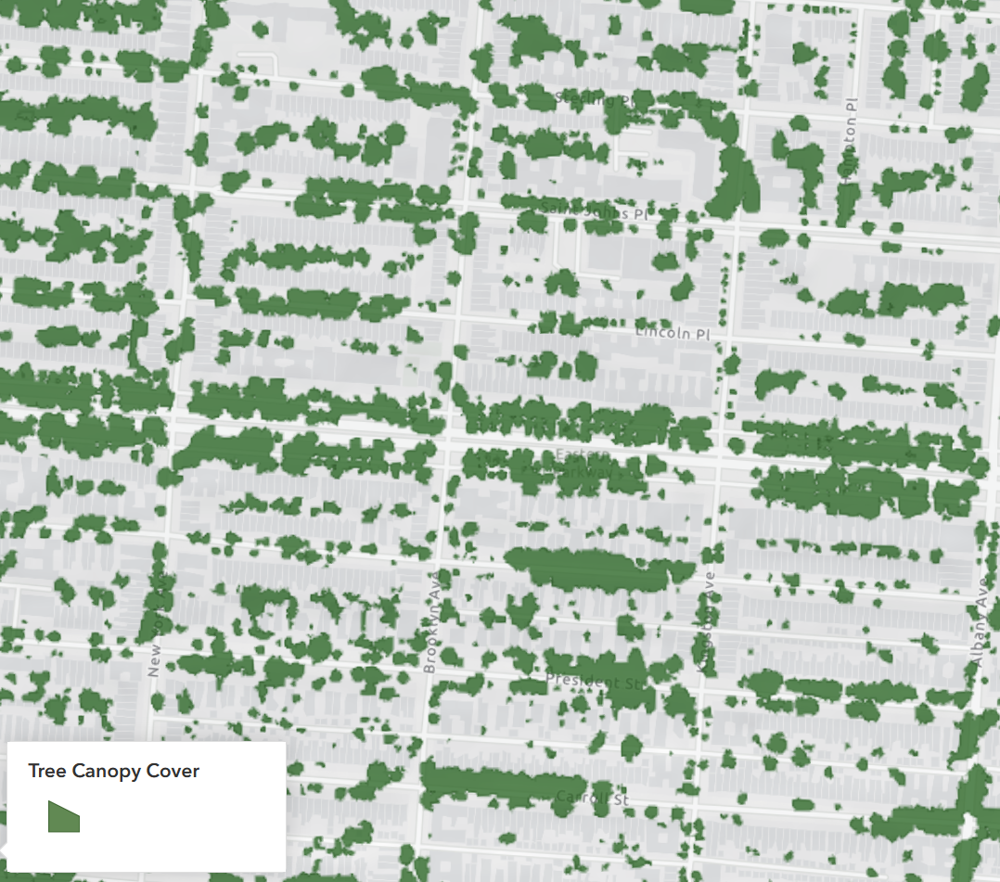
Tree Canopy Cover
The Tree Canopy Cover layer depicts the areas of New York City covered by tree canopy as of 2017. The polygons in this layer are the derived product of a citywide land cover classification conducted by the University of Vermont Spatial Analysis Laboratory in collaboration with the New York City Office of Technology and Innovation (OTI), based on a LiDAR (Light Detection and Ranging) point cloud capture of the entirety of New York City coordinated by OTI in 2017. The polygons in this application are derived from a New York City land cover raster simplified to 1-foot resolution. Tree Canopy is rendered as a dark green polygon fill.
Tree canopy is one of the most effective passive heat mitigation features in an urban environment: it reduces surface temperatures by providing shade, cools the surrounding air through evapotranspiration, and substantially reduces the urban heat island effect. The distribution of tree canopy in NYC is therefore an important context for understanding why some neighborhoods are at greater heat risk than others — and indeed, percent vegetative cover is one of the five input variables in the Heat Vulnerability Index calculation.
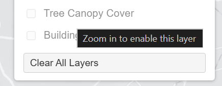
This layer is subject to a scale-dependent visibility threshold. Due to the very large number of canopy polygons in the dataset (millions at 1-foot resolution citywide), the application configures the layer to only render at a scale of 1:25,000 or finer (more zoomed in). At any zoom scale less detailed than 1:25,000, the layer's checkbox in the Layer Control Panel is automatically disabled, greyed out, and given a tooltip reading "Zoom in to enable this layer." Once the user zooms in past 1:25,000, the checkbox becomes active and the layer can be toggled on. This scale threshold prevents the application from attempting to render the entire citywide tree canopy at zoomed-out views, which would otherwise cause severe performance degradation.
Tree Canopy Cover is a context layer and does not have a popup configured. More information about the 2017 tree canopy dataset is available on GitHub, NYC Open Data, and the 2017 NYC LiDAR capture portal.
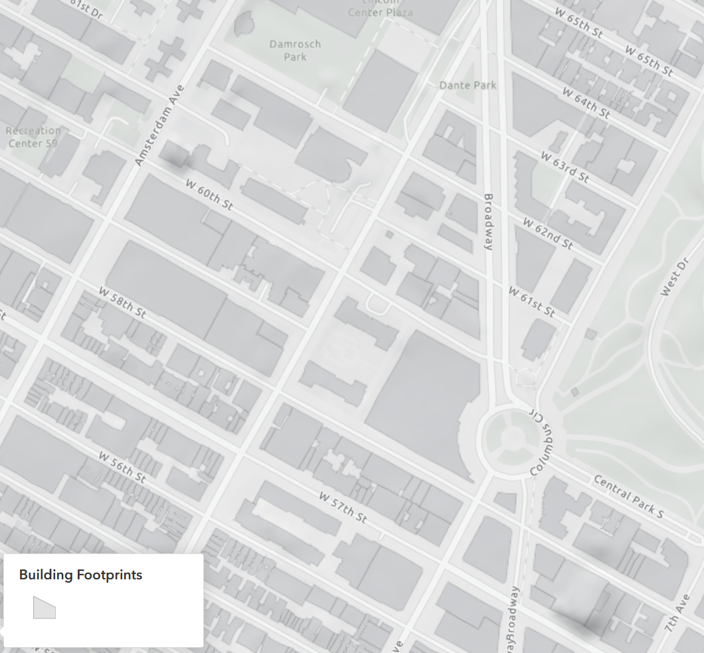
Building Footprints
The Building Footprints layer depicts the full perimeter outline of every building in New York City as viewed from directly above. The dataset includes every building in the city greater than 400 square feet in area and taller than 12 feet in height. The underlying dataset is maintained by the New York City Office of Technology and Innovation (OTI) and is continually updated based on annually captured aerial imagery and New York City Department of Buildings (DOB) records.
Building Footprints are rendered as light gray polygon fills with a slightly darker outline. The styling is intentionally restrained so that the layer functions as urban context rather than as a primary analytical feature — when active, it provides a sense of the built form of NYC blocks (street widths, lot depths, building density) without dominating the visual hierarchy of the map.
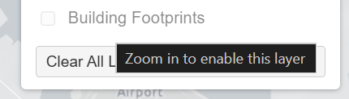
Like the Tree Canopy Cover layer, this layer is subject to a scale-dependent visibility threshold. Building Footprints contain a very large number of features (over 1 million), and rendering the full layer at a citywide zoom would be prohibitively slow. The application is configured to only render the layer at a scale of 1:25,000 or finer, with the same disabled checkbox and tooltip behavior described in the Tree Canopy Cover section above.
When the user activates 3D mode (described elsewhere in this manual), the 3D Buildings layer becomes visible. The 2D Building Footprints layer does not interact directly with the 3D Buildings layer, and both can be visible simultaneously, but in practice, the 3D Buildings layer renders on top of the footprints in 3D mode, and the footprints become almost entirely occluded.
Building Footprints is a context layer and does not have a pop-up configured. More information about the OTI building footprints dataset is available on GitHub and the NYC Maps Hub.
3D View
In addition to the standard 2D map view, the application includes a fully interactive 3D scene view that allows users to visualize the built environment of New York City in three dimensions and analyze how buildings cast shadows over the course of a summer day. The 3D view is particularly useful for understanding solar exposure and shade availability at a neighborhood or block level — information that is directly relevant to identifying areas where shade and cooling resources are scarce.
Activating and Deactivating 3D Mode
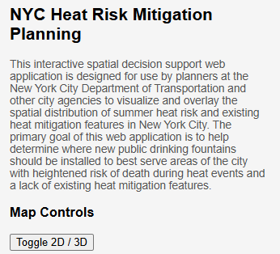
The Toggle 2D / 3D button, located near the top of the left-hand sidebar, switches the application between its 2D map view and its 3D scene view. Clicking it once activates 3D mode; clicking it again returns to 2D mode. When 3D mode is activated, the map camera animates smoothly from a top-down perspective to an oblique viewing angle, tilted and rotated to give a sense of the city's three-dimensional form. The application retains your current map center and zoom level during this transition, so you will still be oriented to the same area of the city.
When you return to 2D mode, the camera animates back to a top-down perspective and all 3D-specific tools are deactivated.
Important — Zoom in before using the 3D view. The 3D Buildings layer and both shadow tools require a high zoom level to render. At the application's default citywide zoom level, the 3D building models will not appear at all, and shadow visualizations will not display. Before activating any shadow tool, zoom in to at least a neighborhood or block level. The closer you are to street level, the more complete and visually useful the shadow rendering will be.
What Changes in 3D Mode
Several things happen automatically when 3D mode is activated:
- 3D Buildings appear. A layer of 3D building models becomes visible across all five boroughs once you zoom in sufficiently. These models are derived from Esri's Open 3D Buildings dataset (see below) and are what the shadow analysis tools use to compute and render shadows. The buildings are not visible in 2D mode.
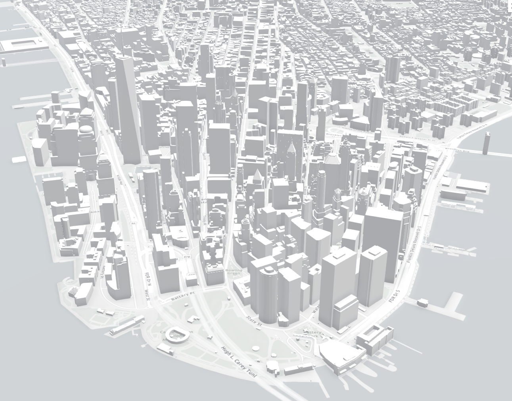
- Terrain becomes visually prominent. The application uses Esri's World Elevation Terrain 3D layer to model the topographic surface of the earth beneath the map at all times, but its relief only becomes clearly visible in 3D mode, where the tilted camera reveals hills, valleys, and changes in elevation across the landscape. This layer is always active in the background and does not appear in the layer control panel.
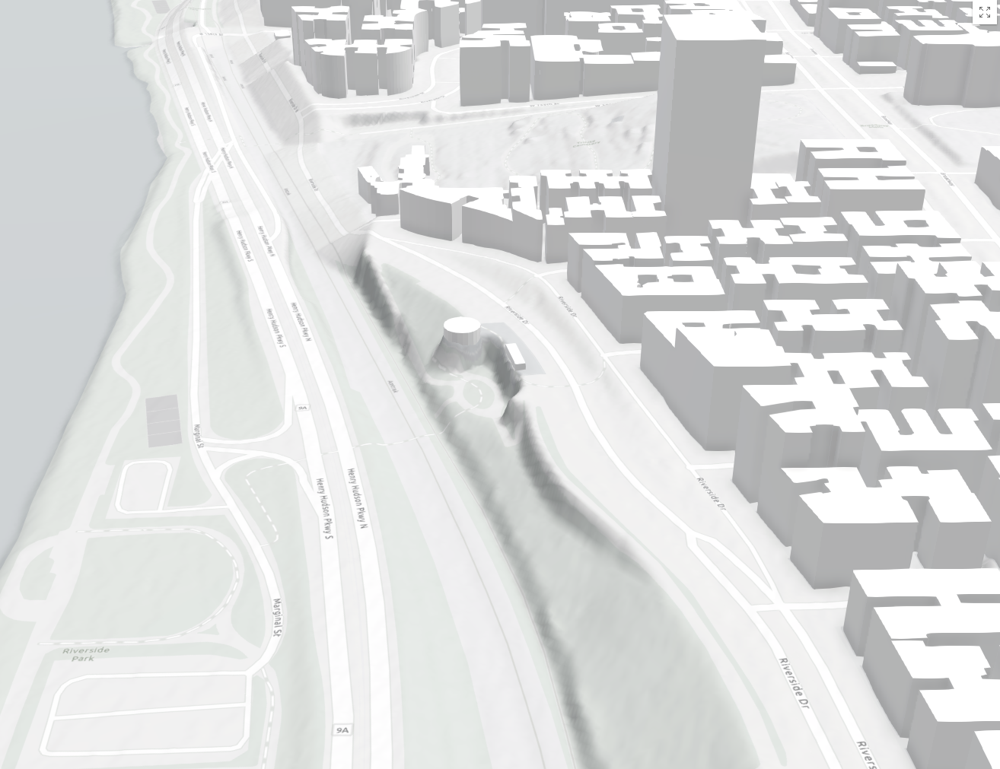
- The scale indicator widget is hidden. The scale ratio displayed in the lower right corner of the map is hidden in 3D mode because map scale is not a reliable measurement when the camera is tilted at an oblique angle.
- The map legend is hidden. The legend visible in 2D mode when any 2D layer is active is automatically hidden in 3D mode, since the 3D view is focused on 3D building and shadow analysis. However, any active 2D layers will remain rendered on the map when 3D mode is activated, and 2D layers can still be turned on and off while in 3D mode.
- The 3D Shadow Tools panel appears in the sidebar. A new panel of shadow analysis options becomes available in the sidebar, allowing you to select between two shadow visualization tools (described below).
- Below the 3D Shadow Tools panel, the sidebar additionally displays contextual information about 3D mode. This includes a short description of each shadow tool, a set of expandable panels describing the three visualization modes of the Shadow Analysis tool (Areas above threshold, Total shadow duration, and Discrete shadows), and descriptions of the ArcGIS data layers (Open 3D Buildings and World Elevation Terrain 3D) upon which the shadow tools rely. As with the 2D data layer panels, this content is intended as a quick at-a-glance reference within the application itself; the subsections below provide more exhaustive descriptions.
The Open 3D Buildings Layer
The 3D building models that appear in 3D mode come from Esri's Open 3D Buildings dataset, a global layer of three-dimensional building models maintained by Esri as part of the ArcGIS Living Atlas. The dataset is built from a combination of open and community data sources — including OpenStreetMap, Overture Maps, and open LiDAR data — and uses procedural modeling tools to produce architecturally detailed building forms across all five boroughs of New York City. These models serve as the geometric basis for all shadow calculations performed by the shadow tools in this application. The Open 3D Buildings layer is only visible when 3D mode is active and does not appear in the layer control panel — it is managed automatically by the 2D/3D toggle.
3D Shadow Tools
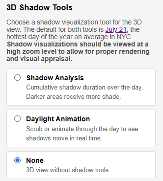
The sidebar panel labeled 3D Shadow Tools provides access to two shadow visualization tools: Shadow Analysis and Daylight Animation. A third option, None, disables shadow visualization while keeping the 3D view active. You select a tool using the radio buttons in the sidebar. By default, no shadow tool is active when you first enter 3D mode (the None option is selected).
Both tools are pre-configured to model shadow conditions on July 21, the hottest day of the year on average in New York City. The date can be adjusted within each tool if desired.
Shadow Analysis
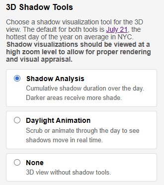
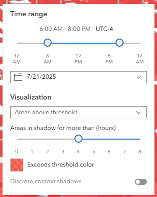
The Shadow Analysis tool calculates and displays the cumulative amount of shadow that buildings cast over a configurable span of time during a single day. Unlike the Daylight Animation tool, it does not show shadows moving in real time — instead, it produces a static visualization summarizing shadow coverage over the entire time window. The tool's controls appear within the map view when it is activated and include the following:
Time range slider: A slider with two handles that sets the start and end times of the shadow analysis period. Drag the left handle to adjust the start time and the right handle to adjust the end time. By default, the time range spans the approximate full daylight hours on July 21, 2025: 6:00 AM to 8:00 PM.
Date picker: A calendar control that sets the date for which shadow accumulation is calculated. The default is July 21, 2025 — the hottest day of the year on average in New York City. Changing the date updates the shadow visualization to reflect the sun's path on that day.
Visualization mode dropdown: A dropdown menu that selects between the tool's three shadow visualization modes. The default mode when the tool is first activated is Areas above threshold. The three modes are described in detail below.
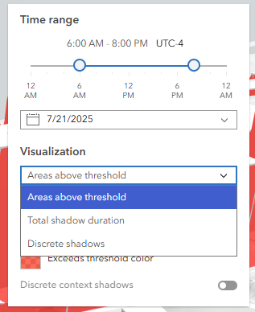
Color picker: A control that allows you to change the color and opacity of the shadow overlay on the map. Each visualization mode has its own default color — red for Areas above threshold, blue for Total shadow duration, and dark gray for Discrete shadows. All the default colors have a default opacity of 70%. The color picker updates automatically when you switch between modes to reflect each mode's default, though you can adjust it for any mode to suit your visual preferences or to improve contrast against the basemap.
UTC offset: Displays the current Coordinated Universal Time (UTC) time offset being applied to the shadow calculation — shown as UTC-4 in this tool, which is the offset for Eastern Daylight Time, the appropriate time zone for New York City in summer. If you change the date to a time of year when a different offset applies, you can click this text to adjust it manually.
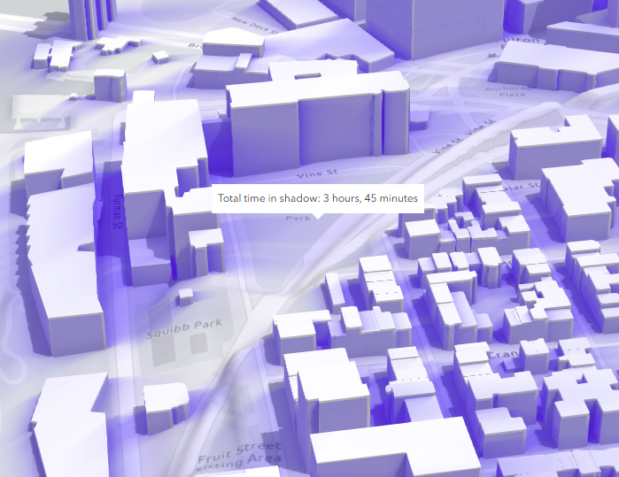
Hover tooltip: When your cursor hovers over any location on the map while the Shadow Analysis tool is active in Areas above threshold or Total shadow duration mode, a tooltip displays the total amount of time that location spends in shadow during the configured time range. Shadow durations below 15 minutes are reported to the nearest minute; durations of 15 minutes or more are rounded to the nearest 15 minutes. The tooltip is not available in Discrete shadows mode.
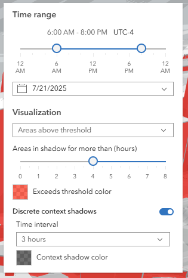
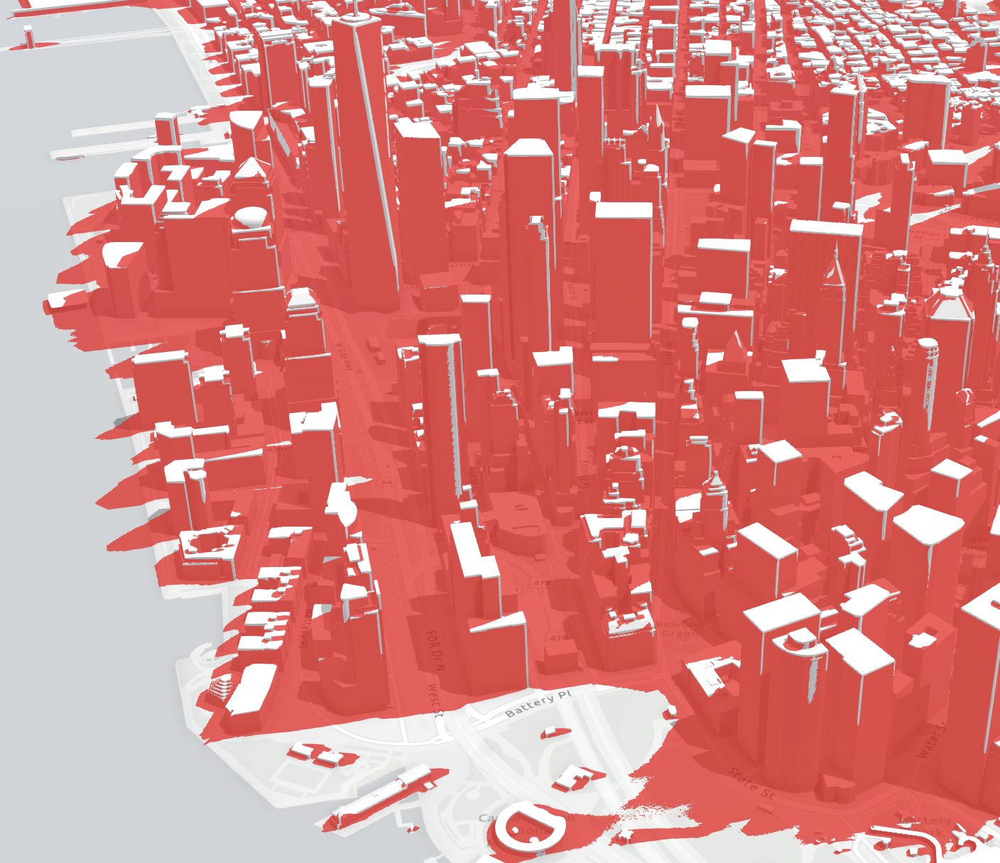
The three visualization modes accessible from the dropdown are:
Areas above threshold (the default mode): Highlights only those areas that spend more than a defined minimum amount of time in shadow during the time range. When this mode is selected, the following controls appear below the visualization dropdown:
- Threshold slider: Sets the minimum shadow duration that an area must receive to be displayed. The slider can be dragged to any half-hour increment between 0 and 8 hours; the default threshold is 4 hours.
- Discrete context shadows toggle: A switch at the bottom of the tool that, when turned on, overlays a discrete shadow visualization on top of the threshold visualization — effectively combining the two modes. When enabled, additional controls appear: a time interval dropdown (with the same options as Discrete shadows mode, as discussed below: 15 minutes, 30 minutes, 1 hour, 2 hours, or 3 hours) and a separate context shadow color picker, which defaults to dark gray at 70% opacity.
This mode is useful for quickly identifying persistently shaded areas that may offer meaningful cooling benefits for pedestrians, while the optional discrete context shadow overlay adds detail about where those shadows fall at regular intervals throughout the day.
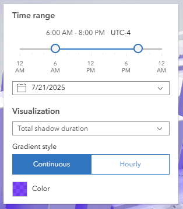
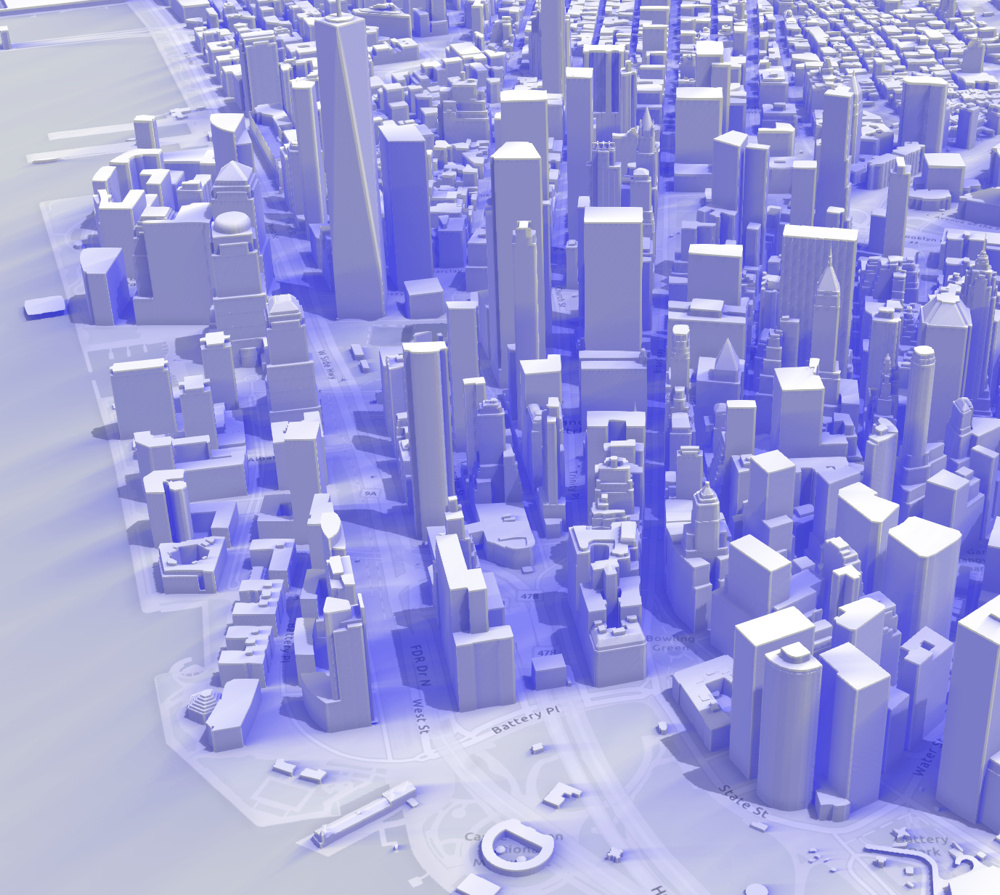
Total shadow duration: Displays cumulative shadow coverage across the time range using a color ramp. Areas that receive no shadow during the time range are fully transparent. As shadow duration increases, the color becomes progressively darker and more opaque, making it easy to identify areas that are in shadow for the greatest share of the day. When this mode is selected, a Gradient style control appears below the visualization dropdown, offering two options: the default style, Continuous, which renders shadow duration as a smooth, uninterrupted color gradient, and Hourly, which stacks snapshots of the shadow footprints accumulated in one-hour intervals across the time range to produce the cumulative visualization. Like the Areas above threshold mode, hovering your cursor over any location on the map in this mode displays the total shadow duration at that point.
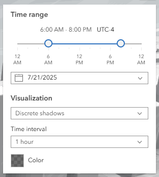
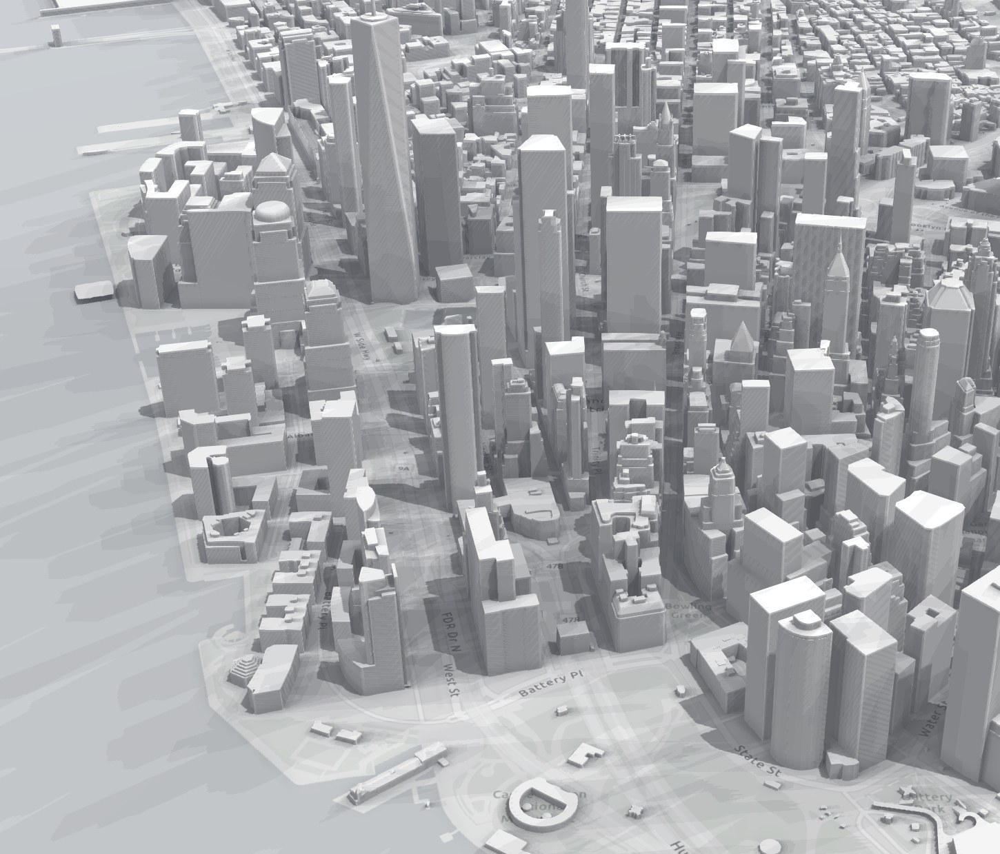
Discrete shadows: Rather than summarizing cumulative shadow coverage, this mode overlays a series of individual shadow footprint snapshots taken at regular intervals across the time range. When this mode is selected, a time interval dropdown appears below the visualization dropdown, allowing you to set the interval between snapshots. Available intervals are 15 minutes, 30 minutes, 1 hour, 2 hours, and 3 hours. Under the default settings — a 1-hour interval across the 6:00 AM to 8:00 PM time range — 15 hourly snapshots are overlaid, each showing where building shadows fell at that specific moment on July 21, 2025 (6:00 AM, 7:00 AM, 8:00 AM, and so on through 8:00 PM). This mode is useful for understanding how the spatial distribution of shade changes across the day.
It should be understood that the Shadow Analysis tool generates shadows based solely on the 3D building models in the Open 3D Buildings layer. The 3D terrain layer itself does not cast shadows in this analysis, although the shadows cast by buildings do interact with the 3D terrain layer by, for instance, elongating when they are cast over a sloped area.
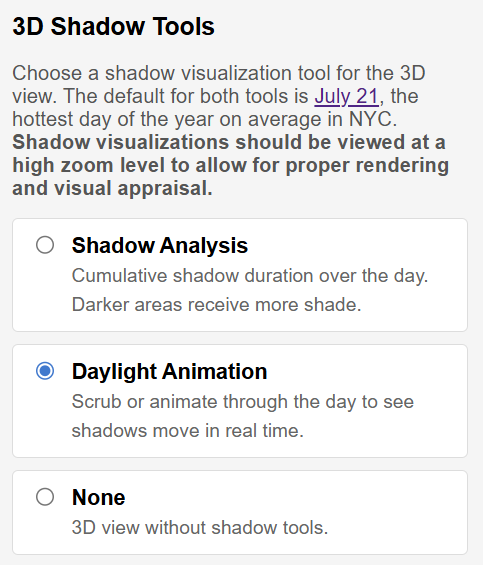
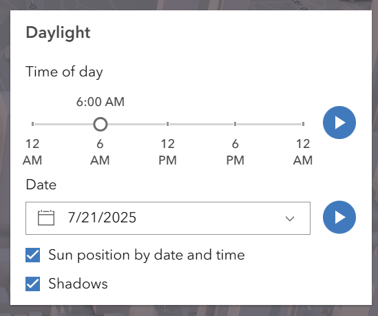
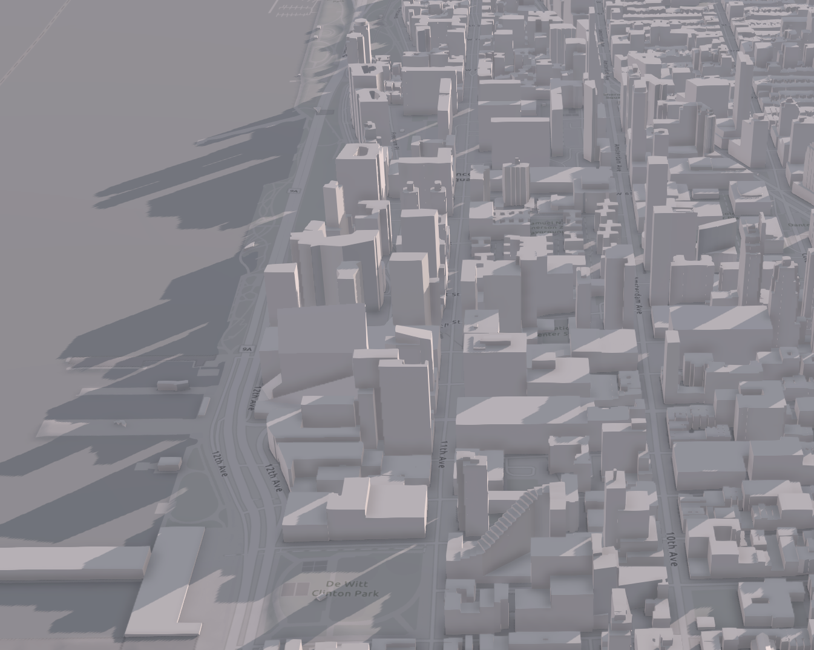
Daylight Animation
The Daylight Animation tool provides a dynamic, real-time simulation of how shadows move across the city as the sun travels through the sky over the course of a day. Rather than summarizing shadow accumulation statistically, it shows you exactly where shadows fall at any given moment in time, updating the scene's lighting and shadows as you interact with the tool's controls.
By default, the animation is set to begin at 6:00 AM on July 21, 2025. The tool's controls appear on the map when it is activated and include the following:
Time of day slider: A horizontal slider that represents the hours of the day. Dragging it left or right moves the simulated sun's position in the sky and updates the shadow footprint on the map in real time, letting you manually scrub to any time of day to examine where shadows fall at that specific moment.
Time of day play button: The play button located next to the time of day slider animates the shadow movement automatically, advancing the time of day continuously from the current slider position. Clicking it again pauses the animation, freezing the shadow rendering at the current time and allowing for close visual inspection of shadow footprints.
Date picker: A calendar control that lets you change the date for which shadow conditions are modeled. The default is July 21, 2025. Changing the date updates the shadow rendering to reflect the sun's path on that day.
Date play button: A second play button, located next to the date picker, animates through the months of the year rather than the time of day. When activated, it advances the date by one month at a time while holding the current time of day fixed, allowing you to observe how shadow patterns at a given time of day shift across the seasons — for example, how the shadow footprint at 4:00 PM changes from July to August to September and so on. While this feature is not central to the summer heat analysis focus of this application, it can be useful for understanding seasonal variation in shade availability.
Shadows toggle: A checkbox that turns shadow rendering on or off within the Daylight Animation tool. When shadows are enabled, the scene displays modeled shadow footprints cast by the 3D building models. Disabling shadows shows the scene with simulated sun lighting but without shadow overlays.
Like the Shadow Analysis tool, Daylight Animation renders shadows based on the 3D building models from the Open 3D Buildings layer. It also incorporates Esri's World Elevation Terrain 3D layer, which means terrain topography influences the lighting, scene appearance and building shadow footprints, though terrain itself does not cast building-like shadows.
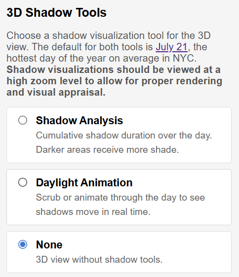
None
Selecting None deactivates whichever shadow tool is currently active and returns the 3D scene to a standard view without any shadow overlay. The 3D Buildings layer and World Elevation Terrain 3D layer remain visible. This option is useful if you want to examine the three-dimensional form of the city without the visual complexity of the shadow analysis overlays.
← Back to Map